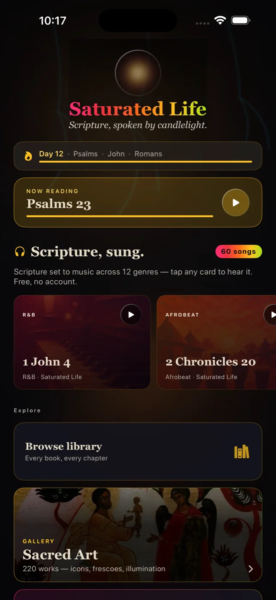
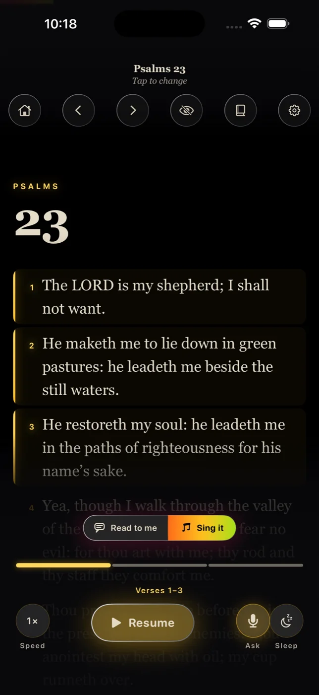
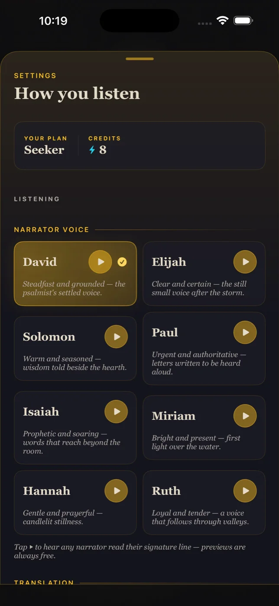
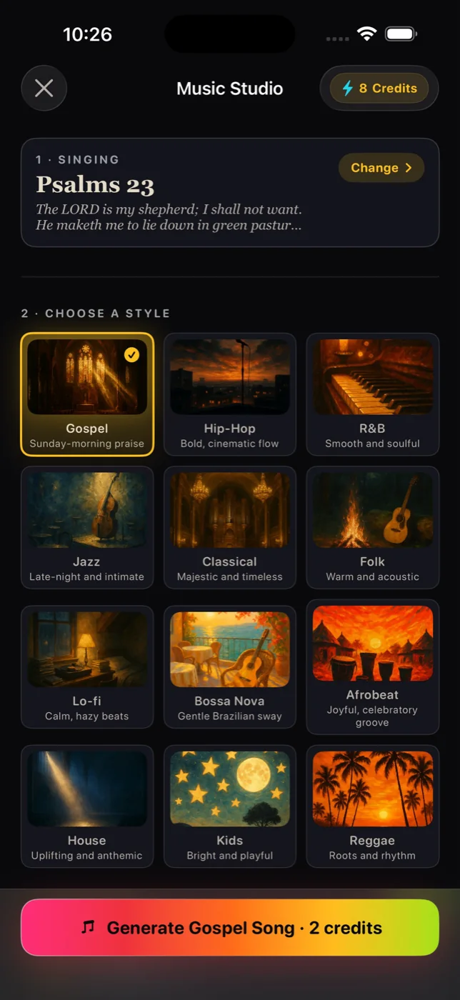
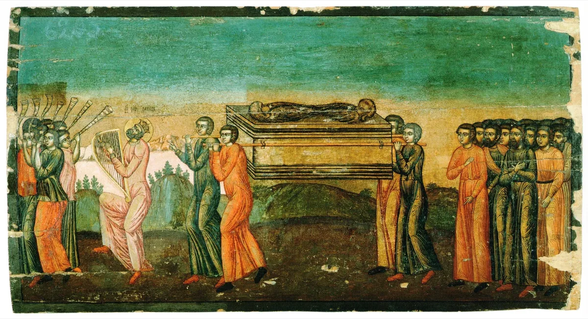
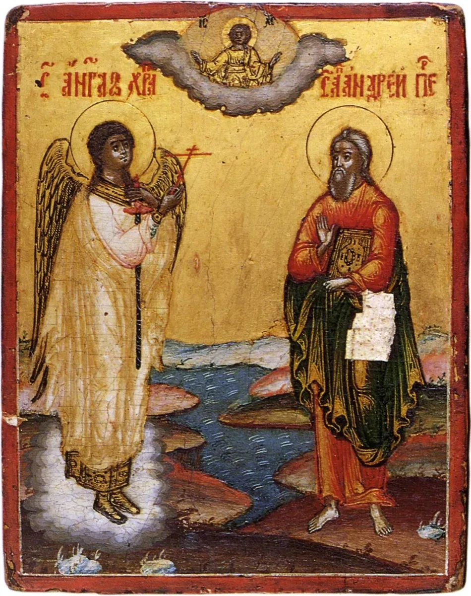
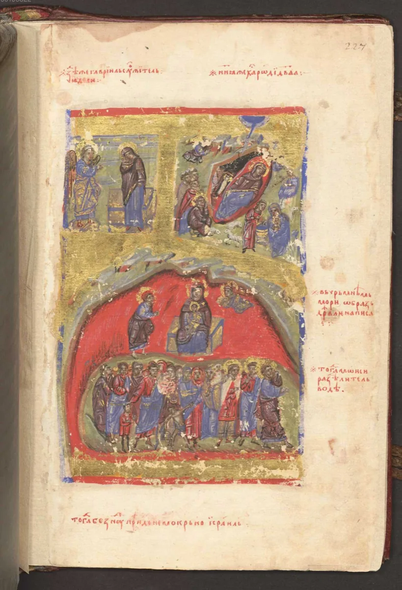

Scripture, sung.
Whole chapters of the Bible — not summaries, not paraphrase — sung as Gospel, R&B, Jazz, Classical, and eight more. The lyric is the verse. All of it. Press play: that's Psalm 23, and it's real.
iOS · Free to start · King James text, sung word for word
One book. Twelve ways to hear it.
Every tile is a real song from the app — same scripture, different room. Choose a genre and the whole page listens with you.
Real audio from the shipping app · nothing simulated · tap any tile to switch
Nothing added. Nothing cut.
The Lord is my shepherd; I shall not want. He maketh me to lie down in green pastures: he leadeth me beside the still waters.
Psalm 23 · King James Version · sung word for word
Paraphrase is how songs about scripture usually work. This is the other thing: the chapter itself, line by line, set to melody — because melody is how a text gets from your shelf to your heart.
Every screen, exactly as it ships.
No mockups. This is the product you download.
Your daily bread, queued.
The day opens with a chapter chosen for you — art, audio, and text together. One tap and the morning has scripture in it before the phone has anything else.

Read while it sings.
The verse highlights as it's sung, karaoke-honest. Eyes and ears on the same line — the oldest memory trick there is, working for you.

Choose who carries it.
Different voices, different genres, the same Word. Psalm 91 hits different over a beat; Genesis breathes in classical. You choose the room it lives in.

Make the chapter yours.
Pick the passage, pick the genre, and the studio sets it to music — your chapter, your key, on your heart by Friday.

A thousand years of illumination, in your pocket.
The app pairs every passage with classical sacred art — the same tradition that kept scripture visible before most people could read. These hang in the app's own library.



Free to use. Two things cost money.
Listening, reading, and the daily chapter are free — that's the point of the whole thing, and it stays free. What costs money: unlimited studio creations (making new songs from any passage you choose) and the full voice library. That's it. No ads next to scripture, ever.
If it's the Word, you shouldn't have to pay to hear it. If it's studio time, that's fair to charge for.
Lay these words upon your heart.
Start with one chapter. By Friday you'll catch yourself singing it at the sink.